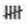
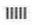

According to the “Definition of Terms” of the Official Baseball Rules (OBR): “An OUT is one of the three required retirements of an offensive team during its time at bat.” An out is recorded with a circle in which is marked, depending on the dynamics of play, the number or numbers of the positions of fielders who assisted in making the putout and, lastly, that of the fielder who executed the putout. If necessary to mention the play, also add the scoring symbol. Both the assists and the putout are credited to the players in question by means of annotations in the defense boxes of the score report.
According to Rule 9.09(a) of the OBR: “The official scorer shall credit a putout to each fielder who (1) catches a ball that is in flight, whether fair or foul; (2) catches a batted or thrown ball and tags a base to put out a batter or runner, or (3) tags a runner when the runner is off the base to which the runner is entitled.”
Putouts are recorded with a vertical stroke in the “PO” column of the defense record, in the boxes of the fielders to whom they are credited.
NB:
Five
outs are recorded

as follows: not like
orEight
outs are recorded as follows:
 not
like
not
like
 or
or